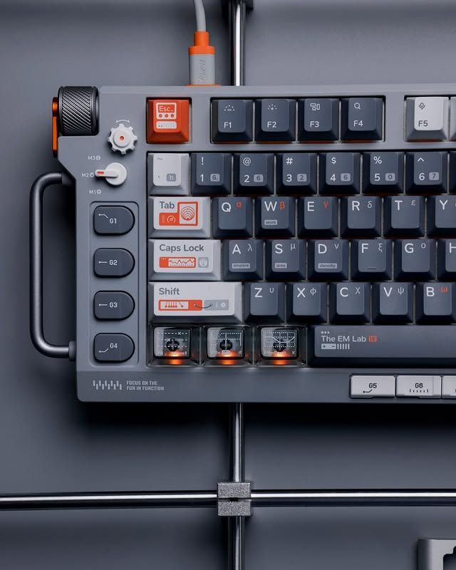

Our Open-Source Tools

At FourSides, we believe the tools artists use should be transparent, community-owned, and built with a clear purpose. Every piece of software we develop is released as free and open-source so that any creative, regardless of resources, can access, study, and build on them.
Below is a list of tools we have built and released to the community. Each one was created to solve a real problem that came up in our own workflow.